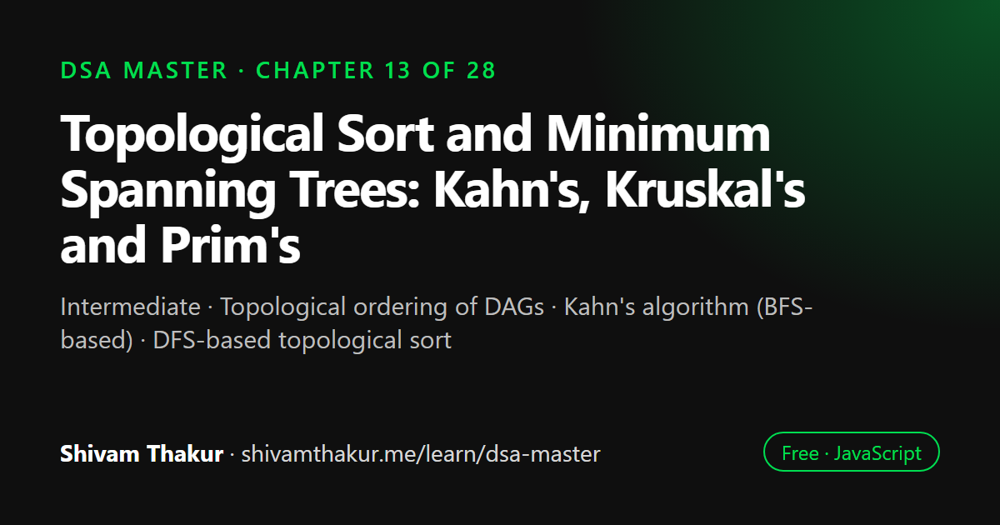

Chapter 13 of 28 · Intermediate
Topological Sort and Minimum Spanning Trees: Kahn's, Kruskal's and Prim's
Topological Sort & Minimum Spanning Trees

Topological sort orders the vertices of a directed acyclic graph so that every dependency comes before what depends on it, as in build systems and course schedules. A minimum spanning tree connects all vertices of a weighted graph with the smallest total edge cost. This chapter implements Kahn's algorithm, DFS-based topological sort, Kruskal's algorithm and Prim's algorithm.
In this chapter you will learn
- Topological ordering of DAGs
- Kahn's algorithm (BFS-based)
- DFS-based topological sort
- Kruskal's algorithm with Union-Find
- Prim's algorithm with a heap
13.0 Two Distinct Problems, One Chapter
This chapter covers two genuinely separate graph problems that happen to share a natural pairing in most DSA curricula: topological sort (ordering tasks that have dependencies — directly extending Chapter 11's directed-cycle-detection machinery) and minimum spanning trees (finding the cheapest way to connect every vertex in a weighted graph — a direct sibling of Chapter 12's shortest-path algorithms, but optimizing a genuinely different quantity). We treat them as two focused halves rather than forcing an artificial connection between them.
PART A: TOPOLOGICAL SORT
13.1 The Problem: Ordering Things With Dependencies
Definition: A topological sort of a Directed Acyclic Graph (DAG) is a linear ordering of its vertices such that for every directed edge u -> v, vertex u comes before vertex v in the ordering.
Real-Life Analogy: Getting Dressed in the Correct Order
You can't put on shoes before socks. You can't put on a jacket before a shirt. These are dependency constraints — "socks must come before shoes" is exactly a directed edge socks -> shoes in a dependency graph. Topological sort answers: "given all these pairwise 'must come before' rules, what's a valid overall order that satisfies every single one simultaneously?" This is precisely the same shape as course prerequisites ("Calculus I before Calculus II"), build systems (compile module A before module B that imports it), and task scheduling (step 3 needs the output of step 1).
ASCII Visualization
Dependency graph (course prerequisites):
Intro --> DataStructures --> Algorithms
| ^
+--------> Discrete Math ------+
Valid topological orderings (there can be MULTIPLE valid answers!):
Intro, DataStructures, Discrete Math, Algorithms
Intro, Discrete Math, DataStructures, Algorithms
Both are valid: every edge's "before" vertex genuinely appears earlier
in the list than its "after" vertex, in both orderings.13.2 Kahn's Algorithm (BFS-Based Topological Sort)
Definition: Kahn's algorithm repeatedly removes vertices with in-degree zero (no remaining unprocessed prerequisites) from the graph, appending them to the result, until either every vertex is processed (success) or no zero-in-degree vertex remains while vertices are still unprocessed (a cycle exists).
Dry Run
Graph: Intro -> [DataStructures, DiscreteMath]
DataStructures -> [Algorithms]
DiscreteMath -> [Algorithms]
Algorithms -> []
In-degree calculation:
Intro: 0 (nothing points TO it)
DataStructures: 1 (from Intro)
DiscreteMath: 1 (from Intro)
Algorithms: 2 (from DataStructures AND DiscreteMath)
Initial queue (in-degree 0): [Intro]
Dequeue Intro. result=[Intro]
neighbor DataStructures: inDegree 1->0. ZERO! queue=[DataStructures]
neighbor DiscreteMath: inDegree 1->0. ZERO! queue=[DataStructures, DiscreteMath]
Dequeue DataStructures. result=[Intro, DataStructures]
neighbor Algorithms: inDegree 2->1. NOT zero yet -> don't enqueue
Dequeue DiscreteMath. result=[Intro, DataStructures, DiscreteMath]
neighbor Algorithms: inDegree 1->0. ZERO! queue=[Algorithms]
Dequeue Algorithms. result=[Intro, DataStructures, DiscreteMath, Algorithms]
no neighbors
result.length (4) === graph.size (4) -> SUCCESS, no cycle.
Final order: [Intro, DataStructures, DiscreteMath, Algorithms]13.3 DFS-Based Topological Sort (The Alternative Approach)
Definition: DFS-based topological sort performs a standard DFS, and appends each vertex to the result only after all of its descendants have been fully processed (i.e., on the way back up, in postorder — directly reusing Chapter 8's postorder traversal concept), then reverses the final result.
function topologicalSortDFS(graph) {
const visited = new Set();
const recursionStack = new Set(); // reused directly from Chapter 11's cycle detection!
const result = [];
function dfs(vertex) {
visited.add(vertex);
recursionStack.add(vertex);
for (const neighbor of graph.get(vertex) || []) {
if (recursionStack.has(neighbor)) {
throw new Error('Graph contains a cycle — no valid topological ordering exists');
}
if (!visited.has(neighbor)) {
dfs(neighbor);
}
}
recursionStack.delete(vertex);
result.push(vertex); // POSTORDER: add AFTER all descendants are fully processed
}
for (const vertex of graph.keys()) {
if (!visited.has(vertex)) {
dfs(vertex);
}
}
return result.reverse(); // reverse the postorder result to get the topological order!
}Dry Run (Same Graph as Section 13.2)
Graph: Intro -> [DataStructures, DiscreteMath]
DataStructures -> [Algorithms]
DiscreteMath -> [Algorithms]
Algorithms -> []
dfs(Intro):
visited={Intro}, recursionStack={Intro}
neighbor DataStructures: not visited -> dfs(DataStructures)
visited={Intro,DataStructures}, recursionStack={Intro,DataStructures}
neighbor Algorithms: not visited -> dfs(Algorithms)
visited={...,Algorithms}, recursionStack={...,Algorithms}
no neighbors
recursionStack removes Algorithms. result.push(Algorithms) -> result=[Algorithms]
recursionStack removes DataStructures. result.push(DataStructures) -> result=[Algorithms, DataStructures]
neighbor DiscreteMath: not visited -> dfs(DiscreteMath)
visited={...,DiscreteMath}, recursionStack={Intro,DiscreteMath}
neighbor Algorithms: ALREADY VISITED, and NOT in recursionStack (it was removed!) -> fine, skip
recursionStack removes DiscreteMath. result.push(DiscreteMath) -> result=[Algorithms, DataStructures, DiscreteMath]
recursionStack removes Intro. result.push(Intro) -> result=[Algorithms, DataStructures, DiscreteMath, Intro]
Reverse: [Intro, DiscreteMath, DataStructures, Algorithms]
This is a DIFFERENT valid ordering than Kahn's algorithm produced (Intro, DataStructures,
DiscreteMath, Algorithms) — and BOTH are correct! Remember: topological sort results
are not unique in general; multiple valid orderings can exist for the same DAG.PART B: MINIMUM SPANNING TREES
13.4 The Problem: Connecting Everything as Cheaply as Possible
Definition: A spanning tree of a connected, undirected graph is a subgraph that includes every vertex, connected, with no cycles (exactly V-1 edges for V vertices — the minimum possible to keep everything connected). A Minimum Spanning Tree (MST) is the spanning tree whose total edge weight is smallest among all possible spanning trees.
Real-Life Analogy: Wiring a Neighborhood for Internet Access
Imagine an internet company needs to connect every house in a neighborhood with fiber cable, where the cost of laying cable between any two specific houses is known (and varies — some pairs are close together, cheap to connect; others are far apart, expensive). The company wants every house connected to the network somehow (not necessarily directly to every other house — indirect connections through other houses are fine), at the lowest total cable cost. This is exactly the MST problem: find the cheapest set of connections that links everything together, using no more connections than strictly necessary (any "extra" connection beyond a tree's V-1 edges would only add cost without adding any new connectivity, since a spanning tree is already fully connected by definition).
Why This Is Genuinely Different From Shortest Path (Chapter 12)
This is worth being crisp about, since the two problems are frequently confused: shortest path (Chapter 12) minimizes the total weight of a path between two SPECIFIC vertices. MST minimizes the total weight of connecting ALL vertices together, with no specific "start" or "end" in mind. An MST doesn't promise the shortest route between any particular pair of vertices — it only promises the cheapest way to make sure everything is reachable from everything else, given the freedom to route however is globally cheapest.
13.5 Kruskal's Algorithm: Greedy Edge Selection
Definition: Kruskal's algorithm builds an MST by sorting all edges by weight (ascending), then greedily adding each edge to the growing MST unless it would create a cycle, until V-1 edges have been added.
Dry Run
Vertices: A, B, C, D
Edges: [A,B,1], [B,C,4], [A,C,3], [C,D,2], [B,D,5]
Sorted by weight: [A,B,1], [C,D,2], [A,C,3], [B,C,4], [B,D,5]
parent = {A:A, B:B, C:C, D:D} (each vertex is its own separate group initially)
Edge [A,B,1]: find(A)=A, find(B)=B. Different! union(A,B) -> parent={A:B,B:B,C:C,D:D}
mstEdges=[[A,B,1]], totalWeight=1
Edge [C,D,2]: find(C)=C, find(D)=D. Different! union(C,D) -> parent={A:B,B:B,C:D,D:D}
mstEdges=[[A,B,1],[C,D,2]], totalWeight=3
Edge [A,C,3]: find(A)=B (via A->B), find(C)=D (via C->D). Different! union(A,C) -> connects the two groups!
parent={A:B,B:D,C:D,D:D} (B's group now merged under D)
mstEdges=[[A,B,1],[C,D,2],[A,C,3]], totalWeight=6
mstEdges.length (3) === vertices.length-1 (3) -> DONE!
(Remaining edges [B,C,4] and [B,D,5] are never even checked — we already have
our V-1=3 edges, and adding more would only create cycles anyway.)
Final MST: A-B(1), C-D(2), A-C(3), total weight = 613.6 Prim's Algorithm: Greedy Vertex Expansion (A Direct Sibling of Dijkstra)
Definition: Prim's algorithm builds an MST by starting from an arbitrary vertex and repeatedly adding the cheapest edge that connects the growing tree to a new, not-yet-included vertex, until every vertex is included.
Why This Should Feel Extremely Familiar
Compare this description to Chapter 12's Dijkstra's algorithm: both use a min-heap (Chapter 9) to repeatedly select "the cheapest next thing" and expand a frontier outward. The crucial difference: Dijkstra tracks the cheapest total distance from the source to each vertex; Prim's tracks the cheapest single edge connecting the current tree to each outside vertex, with no notion of "total distance from a source" at all — a genuinely different quantity being greedily minimized, despite the nearly identical-looking code structure.
function primMST(graph, startVertex) {
// graph: Map<vertex, Array<[neighbor, weight]>>
const visited = new Set([startVertex]);
const minHeap = new Heap((a, b) => a.weight - b.weight); // Chapter 9's Heap, again!
for (const [neighbor, weight] of graph.get(startVertex) || []) {
minHeap.insert({ from: startVertex, to: neighbor, weight });
}
const mstEdges = [];
let totalWeight = 0;
while (minHeap.size > 0 && visited.size < graph.size) {
const { from, to, weight } = minHeap.extract();
if (visited.has(to)) continue; // this edge would connect to an ALREADY-included vertex — skip (cycle)
visited.add(to);
mstEdges.push([from, to, weight]);
totalWeight += weight;
for (const [neighbor, edgeWeight] of graph.get(to) || []) {
if (!visited.has(neighbor)) {
minHeap.insert({ from: to, to: neighbor, weight: edgeWeight });
}
}
}
return { mstEdges, totalWeight };
}Dry Run
Graph (same edges as Kruskal's example, undirected):
A -> [[B,1],[C,3]]
B -> [[A,1],[C,4]]
C -> [[A,3],[B,4],[D,2]]
D -> [[C,2]]
primMST(graph, 'A'):
visited={A}, heap gets A's edges: [{A,B,1}, {A,C,3}]
Extract {A,B,1}. B not visited. visited={A,B}. mstEdges=[[A,B,1]], weight=1
B's edges: [A,1](A visited, skip adding—wait, we DO add it, filter happens on extraction)
Actually we only push if neighbor not YET visited at push time: A IS visited, skip.
C not visited -> push {B,C,4}
heap now: [{A,C,3}, {B,C,4}]
Extract {A,C,3}. C not visited. visited={A,B,C}. mstEdges=[[A,B,1],[A,C,3]], weight=4
C's edges: A visited-skip, B visited-skip, D not visited -> push {C,D,2}
heap now: [{C,D,2}, {B,C,4}(now stale-ish, but harmless, will be skipped if C already visited on extraction)]
Extract {C,D,2}. D not visited. visited={A,B,C,D}. mstEdges=[[A,B,1],[A,C,3],[C,D,2]], weight=6
visited.size(4) === graph.size(4) -> loop ends
Final MST: A-B(1), A-C(3), C-D(2), total weight = 6
SAME total weight as Kruskal's (6)! Different specific edge set in general is possible
(multiple valid MSTs can exist when weights tie), but the TOTAL weight of any valid
MST for a given graph is always the same, provably.13.7 Edge Cases and Gotchas Checklist
- Disconnected graphs have no spanning tree at all (and no valid single topological order spanning all components in a meaningful combined sense, though each component can independently be topologically sorted if it's itself a DAG) — always verify/state your algorithm's behavior on disconnected input.
- Multiple valid topological orders can exist — never assume there's a single "correct" answer; verify correctness by checking the ordering property holds (every edge's source precedes its destination), not by comparing to one specific expected sequence.
- Cycles make topological sort undefined — always check for and handle this explicitly (Kahn's free length-check, or DFS's
recursionStack). - MST weight is unique; the specific edge set may not be — if edge weights contain ties, multiple different MSTs with the same total weight can exist; don't assume a single canonical MST when comparing outputs.
- MST algorithms assume undirected graphs — Kruskal's and Prim's, as covered here, are defined for undirected graphs; "minimum spanning arborescence" is the (more complex, out of scope here) directed-graph analogue, worth knowing exists if a directed MST-shaped question arises.
- Negative weights are actually FINE for MST (unlike Dijkstra's requirement in Chapter 12!) — since MST algorithms only compare edge weights relative to each other for greedy selection, never accumulate a "distance from source" the way Dijkstra does, negative weights cause no correctness issues at all. This is a genuinely interesting, easy-to-miss contrast worth mentioning explicitly.
13.8 Chapter Summary
This chapter covered two related-but-distinct graph problems building directly on Chapters 9, 11, and previewing Chapter 14. Topological sort answers "what linear ordering satisfies every 'must come before' dependency constraint in a DAG," and only exists at all for acyclic graphs — a direct consequence of Chapter 11's cycle-detection lesson, since a cycle represents a logical contradiction in dependency terms. We covered both Kahn's algorithm (BFS-based, repeatedly processing zero-in-degree vertices, with an elegant, free cycle-detection side effect via a simple length check) and the DFS-based approach (postorder traversal, directly reusing Chapter 8's postorder concept and Chapter 11's recursionStack cycle-detection technique verbatim, followed by a final reversal whose necessity we built real intuition for: DFS naturally finishes the deepest dependency chains first, so the raw postorder result is the topological order turned backward).
We then turned to Minimum Spanning Trees, carefully distinguishing this problem from Chapter 12's shortest path: MST minimizes the total cost of connecting all vertices together with no specific source or destination in mind, a genuinely different optimization target from "cheapest route between two specific points." We covered Kruskal's algorithm (globally sort all edges, greedily add each unless it would form a cycle), which directly previewed the next chapter by requiring an efficient "are these two vertices already connected?" check — precisely the question Union-Find (Disjoint Set Union) exists to answer efficiently, making Chapter 14 a natural, motivated continuation rather than an arbitrary new topic. We covered Prim's algorithm as a direct structural sibling of Chapter 12's Dijkstra — both use a min-heap to greedily expand a frontier — while being precise about the genuinely different quantity each minimizes (total distance-from-source for Dijkstra, versus cheapest single connecting edge for Prim's, with no source-distance concept at all).
We closed with the practical decision framework between Kruskal's (better for sparse graphs, since edge-sorting cost dominates and stays manageable) and Prim's (better for dense graphs, since its heap-based frontier expansion scales more naturally with vertex degree), and flagged a genuinely interesting, easy-to-miss contrast with Chapter 12: MST algorithms have no issue with negative edge weights whatsoever, unlike Dijkstra's strict non-negative-weights requirement, precisely because MST's greedy comparisons never accumulate a "distance from source" the way shortest-path algorithms do.
13.9 Revision Notes
- Topological sort produces a linear ordering respecting all "must come before" dependency edges — it exists only for DAGs; cycles make it logically undefined.
- Kahn's algorithm (BFS-based, zero-in-degree processing) gets cycle detection for free via a final length check; DFS-based topological sort needs an explicit
recursionStackand requires reversing the postorder result. - MST minimizes the cost of connecting ALL vertices together — a genuinely different optimization target from shortest path's "cheapest route between two specific vertices."
- Kruskal's algorithm globally sorts edges and greedily adds them unless they'd form a cycle, directly motivating the need for efficient connectivity checks (Union-Find, Chapter 14).
- Prim's algorithm is a direct structural sibling of Dijkstra (heap-based frontier expansion), but minimizes "cheapest single connecting edge" rather than "total distance from source."
- Kruskal's suits sparse graphs (sorting dominates); Prim's suits dense graphs (heap-based expansion scales with vertex degree).
- MST algorithms tolerate negative edge weights with no correctness issues, unlike Dijkstra's strict non-negative requirement — a notable, easy-to-miss contrast between the two chapters.
13.10 Mind Map (ASCII)
TOPOLOGICAL SORT & MST
|
+---------------------+----------------------+
| |
TOPOLOGICAL SORT MINIMUM SPANNING TREE
(DAGs only!) (connect ALL vertices cheaply --
| DIFFERENT from shortest path!)
+----+----+ |
| | +----------+----------+
KAHN'S DFS-BASED | |
(BFS, (postorder, KRUSKAL'S PRIM'S
in-degree THEN REVERSE -- (sort ALL edges, (heap-based,
zero "finish deepest greedily add if DIRECT SIBLING
processing) chains first") no cycle forms) of DIJKSTRA --
| | | but minimizes
FREE cycle needs explicit NEEDS UNION-FIND "cheapest edge,"
detection recursionStack (Ch.14 preview!) not "distance
(length (Ch.11 reused | from source")
mismatch) verbatim) O(E log E) |
(sort dominates) O(E log V)
| |
Best: SPARSE graphs Best: DENSE graphs
| |
MST tolerates NEGATIVE weights fine
(unlike Dijkstra's strict requirement!)13.11 Cheat Sheet
TOPOLOGICAL SORT
====================
Exists ONLY for DAGs (Directed Acyclic Graphs) -- cycles make it undefined.
Kahn's (BFS): compute in-degree for all vertices -> queue up zero-in-degree ones ->
repeatedly dequeue, decrement neighbors' in-degree, enqueue new zeros ->
if result.length != V, a CYCLE exists (free detection!)
DFS-based: standard DFS, push vertex to result in POSTORDER (after all descendants) ->
REVERSE the final result -> use recursionStack (Ch.11) to detect cycles
MINIMUM SPANNING TREE (undirected graphs)
=============================================
Goal: connect ALL vertices at minimum TOTAL cost (NOT shortest path between 2 points!)
Kruskal's: sort ALL edges by weight -> greedily add each UNLESS it forms a cycle
(check via Union-Find, Ch.14) -> stop at V-1 edges
Time: O(E log E). Best for SPARSE graphs.
Prim's: start at any vertex -> min-heap (Ch.9) of edges leaving the current tree ->
repeatedly extract cheapest edge to a NOT-YET-INCLUDED vertex -> add it, expand frontier
Time: O(E log V). Best for DENSE graphs. Structurally = Dijkstra (Ch.12), different goal.
KEY CONTRAST WITH CHAPTER 12
================================
MST tolerates NEGATIVE edge weights fine (greedy comparisons never accumulate
"distance from source"). Dijkstra REQUIRES non-negative weights. Don't confuse the two!13.12 Key Takeaways
- Topological sort only exists for DAGs — cycles make a valid dependency ordering logically impossible.
- Kahn's algorithm gets cycle detection for free (a length mismatch); DFS-based sort needs an explicit recursionStack and a final reversal.
- MST minimizes total connection cost across all vertices — a fundamentally different goal from shortest path's point-to-point optimization.
- Kruskal's (sort + Union-Find) suits sparse graphs; Prim's (heap-based, Dijkstra's sibling) suits dense graphs.
- MST algorithms handle negative weights without issue, unlike Dijkstra's strict non-negative requirement — know this contrast cold.
13.13 20 Multiple Choice Questions
Tap an answer to check it. Your score updates as you go.
Score: 0 / 0 answered (20 questions)
What condition must a graph satisfy for a topological sort to exist?
What does Kahn's algorithm repeatedly process?
How does Kahn's algorithm detect a cycle?
In DFS-based topological sort, when is a vertex added to the result list?
Why must the DFS-based topological sort result be reversed at the end?
What data structure does DFS-based topological sort reuse from Chapter 11's cycle detection?
What problem does a Minimum Spanning Tree (MST) solve?
How is MST fundamentally different from Chapter 12's shortest path problem?
What is the core strategy of Kruskal's algorithm?
What data structure does Kruskal's algorithm rely on to detect cycles efficiently?
What is the time complexity of Kruskal's algorithm?
What is the core strategy of Prim's algorithm?
What existing algorithm is Prim's algorithm structurally most similar to?
What is the key difference between what Prim's algorithm minimizes versus what Dijkstra minimizes?
Which algorithm is generally preferred for sparse graphs when finding an MST?
Which algorithm is generally preferred for dense graphs when finding an MST?
How many edges does a spanning tree of a graph with V vertices contain?
Is the specific edge set of an MST guaranteed to be unique?
How do MST algorithms handle negative edge weights, compared to Dijkstra's algorithm?
Can a disconnected graph have a single spanning tree covering all vertices?
Show the answer key
1-b, 2-b, 3-b, 4-b, 5-b, 6-b, 7-b, 8-b, 9-b, 10-b, 11-b, 12-b, 13-b, 14-b, 15-b, 16-b, 17-b, 18-b, 19-b, 20-b
13.14 20 Coding Problems
Easy
- Implement in-degree calculation for a directed graph.
- Implement Kahn's algorithm from memory (section 13.2), testing it on the course-prerequisite example.
- Implement DFS-based topological sort from memory (section 13.3), and verify it produces a DIFFERENT but equally valid ordering compared to Kahn's on the same graph.
- Write a function to verify whether a given ordering is a VALID topological sort of a given graph (check every edge's source precedes its destination).
- Write a function to count the total weight of a given set of edges (a helper for MST verification).
Medium
- Implement Kruskal's algorithm from memory (section 13.5), including the simplified Union-Find helper functions.
- Implement Prim's algorithm from memory (section 13.6), using Chapter 9's generic Heap class.
- Given a graph, determine if it has a UNIQUE topological ordering (hint: at every step, exactly one vertex should have in-degree zero — otherwise multiple valid orderings exist).
- Given a course prerequisite list, determine if it's possible to finish all courses (reuses Chapter 11's directed cycle detection AND this chapter's topological sort — connect the two).
- Given a list of edges with weights, verify that a claimed MST (given as a specific edge set) actually has the minimum possible total weight by comparing against Kruskal's computed result.
Hard
- Given a list of tasks with dependencies and individual task durations, compute the minimum total time to complete all tasks (accounting for parallelizable independent tasks), using topological sort plus a DP-style longest-path-in-DAG calculation (a preview of Dynamic Programming techniques).
- Implement "Alien Dictionary": given a list of words sorted according to an unknown alien language's alphabet ordering, determine the actual character ordering using topological sort on inferred character precedence constraints.
- Given a network of computers with connection costs, determine the minimum cost to connect all computers into a single network, and separately, determine the SECOND-cheapest possible total cost (a genuinely harder MST variant).
- Given a graph, find the minimum spanning FOREST (for a disconnected graph, find the MST of each connected component separately) using a modified Kruskal's or Prim's approach.
- Given a set of cities and their pairwise flight costs, determine the minimum cost to connect all cities via flights, but with the added constraint that a specific "hub" city must have at least 2 direct connections in the final network — discuss the modification needed to standard MST algorithms.
Interview Level
- (Google-level) Given a build system's module dependency graph, implement topological sort to determine a valid build order, and detect and clearly report any circular dependency found, naming the specific cycle.
- (Amazon-level) Given a warehouse network where connecting any two warehouses has a known infrastructure cost, use Kruskal's or Prim's algorithm to design the minimum-cost network connecting all warehouses, and report the total infrastructure investment required.
- (Microsoft-level) Given a course scheduling system, implement Kahn's algorithm to produce a valid semester-by-semester course schedule, where each "layer" processed together (all currently zero-in-degree courses at once) represents one semester's worth of parallel-eligible courses.
- (Meta-level) Given a social network's "influence propagation" model represented as a DAG (influence flows in one direction), use topological sort to determine the correct order to compute each user's total influence score, where a user's score depends on the scores of everyone who influences them.
- (Netflix-level) Design a content encoding pipeline where video processing steps have dependencies (e.g., "transcode" must happen before "generate thumbnails," which must happen before "publish"), using topological sort to determine a valid, parallelizable processing order, and discuss in comments how Kahn's algorithm's "process all zero-in-degree items simultaneously" property naturally maps to identifying steps that can run in parallel.
13.15 5 Interview Questions
- "What is a topological sort, and under what condition does it fail to exist?" (Tests the DAG requirement and understanding of why cycles break it.)
- "Walk me through Kahn's algorithm, and tell me how it detects cycles without a separate pass." (Tests the elegant free cycle-detection mechanism.)
- "How is a Minimum Spanning Tree different from a shortest path?" (Tests the crucial distinction between the two optimization targets.)
- "Compare Kruskal's and Prim's algorithms — when would you choose one over the other?" (Tests the sparse-vs-dense decision framework.)
- "Do MST algorithms work correctly with negative edge weights? What about Dijkstra?" (Tests the notable, easy-to-miss contrast between MST and shortest-path algorithms.)
13.16 3 Real Projects
- Complete Topological Sort Library: Implement both Kahn's and DFS-based topological sort, with a self-check script verifying both produce valid orderings (per coding problem #4's verifier) on a variety of hand-constructed DAGs, and correctly detect cycles on intentionally cyclic test graphs.
- Course Scheduler: Build a Node.js CLI tool that takes a list of courses and prerequisites, uses Kahn's algorithm to group courses into "semesters" (each semester being one batch of simultaneously-zero-in-degree courses), and reports a complete, valid, parallelized schedule — directly implementing coding problem #18.
- Network Cost Optimizer: Build a tool implementing both Kruskal's and Prim's algorithms against the same weighted graph input, verifying they produce the same total MST weight (even if the specific edges differ), and benchmark both at increasing graph sizes/densities to empirically observe the sparse-vs-dense performance trade-off discussed in this chapter.
13.17 Further Reading
- A. B. Kahn's original 1962 paper introducing the topological sorting algorithm bearing his name.
- Joseph Kruskal's and Robert Prim's original papers on minimum spanning trees, for the historical origins of both algorithms.
- Search "minimum spanning arborescence" (also known as the Edmonds' algorithm / Chu-Liu/Edmonds algorithm) for the directed-graph analogue of MST, mentioned briefly in this chapter's edge cases.
- LeetCode's "Topological Sort," "Union Find," and "Minimum Spanning Tree" problem tags, for extensive additional practice directly extending this chapter's algorithms.
Topological Sort & MST: frequently asked questions
What is topological sort used for?
Topological sort orders tasks that have dependencies: package installation, build pipelines, spreadsheet recalculation, course prerequisites and job scheduling. It only works on directed acyclic graphs.
How does Kahn's algorithm detect a cycle?
Kahn's algorithm repeatedly removes vertices with in-degree zero. If it finishes having output fewer vertices than the graph contains, the remaining vertices are part of a cycle.
What is the difference between Kruskal's and Prim's algorithm?
Kruskal's sorts all edges and adds the cheapest one that does not form a cycle, using Union-Find; it suits sparse graphs. Prim's grows the tree from one vertex, always adding the cheapest edge leaving it, using a heap; it suits dense graphs.
Is a minimum spanning tree the same as the shortest path?
No. A minimum spanning tree minimizes the total cost of connecting every vertex, while a shortest path minimizes the cost between two specific vertices. The path between two vertices in an MST is not necessarily their shortest path.